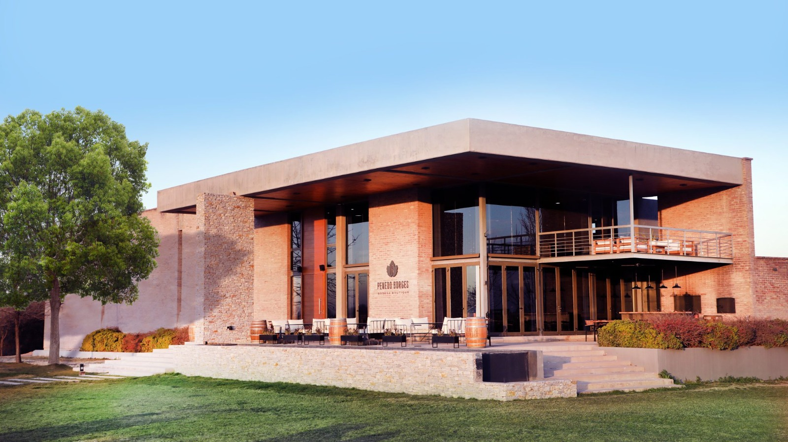
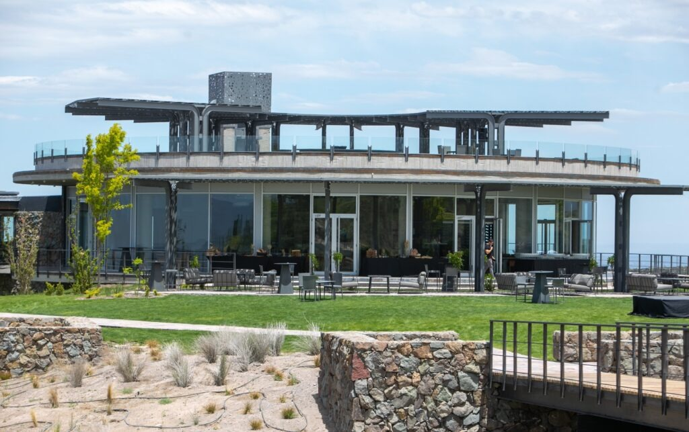
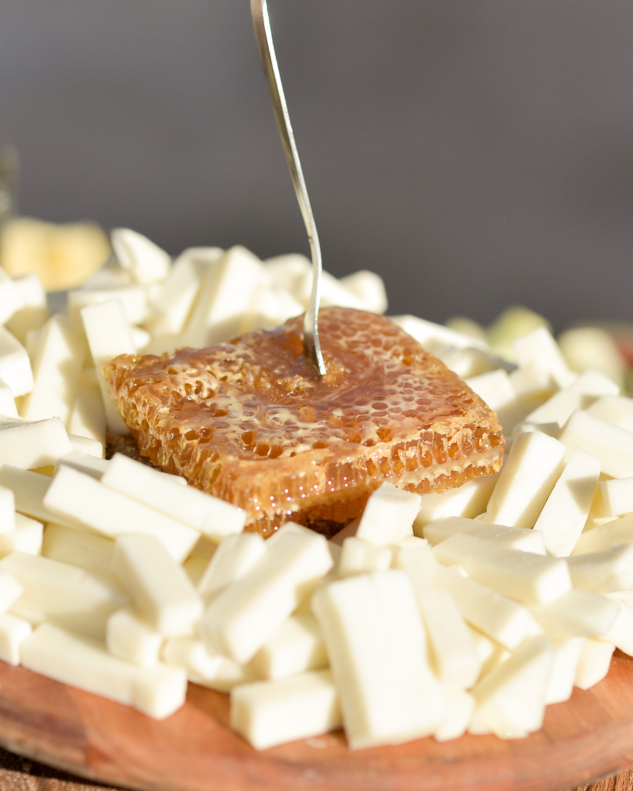
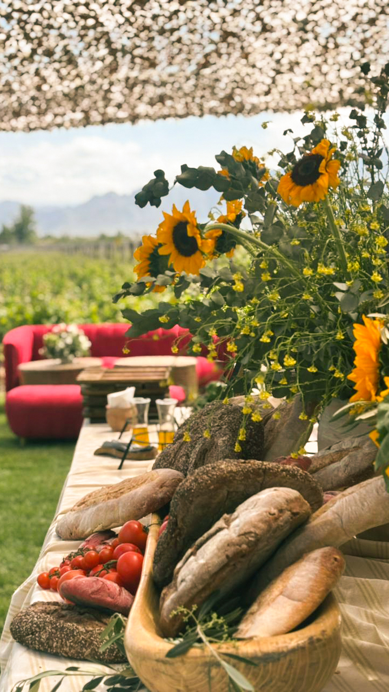
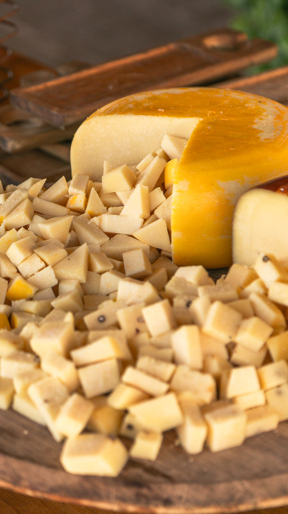
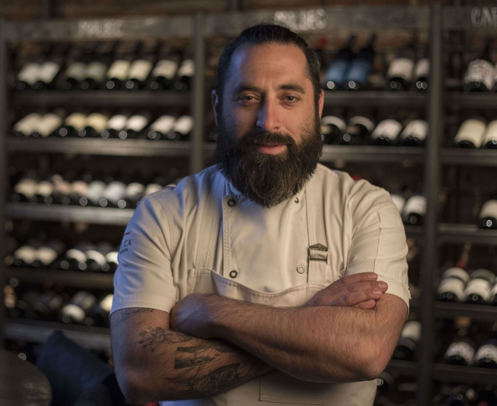
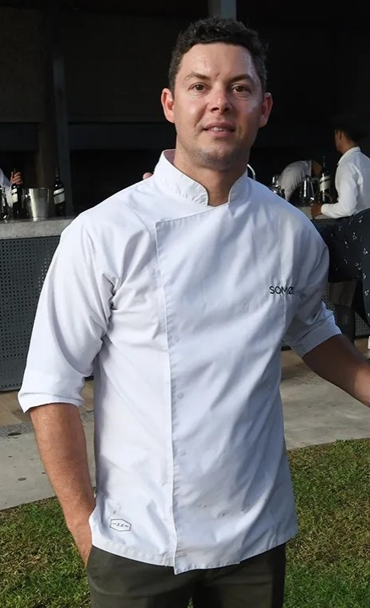
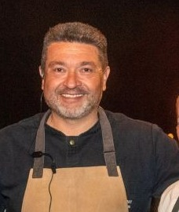

Brindamos servicios de catering de alta gama para eventos corporativos, sociales y celebraciones privadas en toda la región de Cuyo
Quiero mi boda en Mendoza


Reunimos cocina, tierra e identidad en una experiencia de excelencia.



Organizamos tu boda destino de principio a fin. Vos soñás el casamiento en los viñedos, nosotros lo hacemos realidad con estándares internacionales.

Somos Seba, Fran y Agus; tres profesionales que sumamos nuestros recorridos en la cocina, el desarrollo de proyectos y el mundo del vino para crear una historia de excelencia.

Referente de la cocina mendocina, reconocido por su trabajo con productos de estación y técnicas que revolucionan el sabor.
Contactar

Sommelier profesional y Licenciado en Economía. Trayectoria internacional en cruceros de lujo (CUNARD) y gerenciamiento en bodegas de primer nivel.
Contactar

Experto en logística y catering de gran escala con más de 18 años de experiencia liderando eventos corporativos y deportivos masivos.
Contactar
Construyamos juntos un evento que merezca ser recordado para siempre.